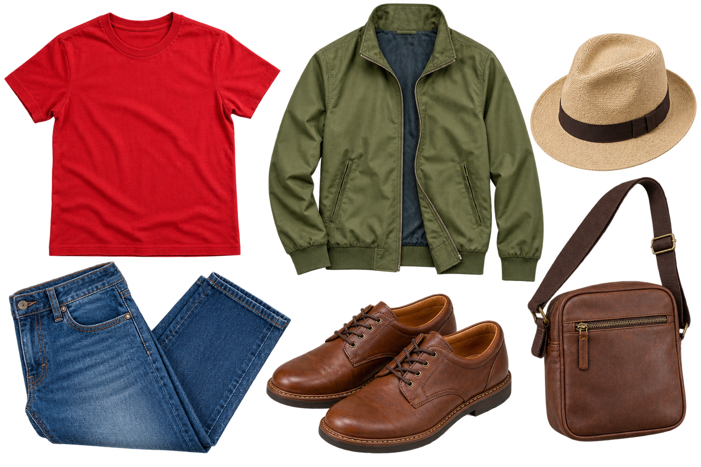

Vocabulary practice · 5A
What are you wearing?
Describe clothes and actions now
WORD BANK · Study first. Cover the word bank for memory games.
Clothes and accessories5A

Tops
- T-shirt
- shirt
- sweater
- jacket
Other clothes
- jeans
- dress
- shoes
- hat
- scarf
Carry
- bag
a jacket · a dress · a scarf
blue jeans · white shoes
I’m wearing a shirt and jeans.
Practice · page 127